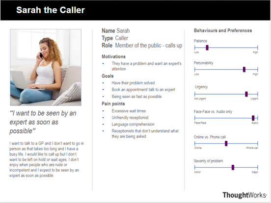
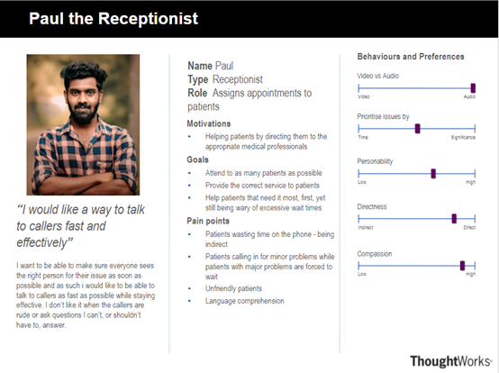
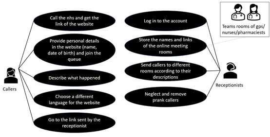
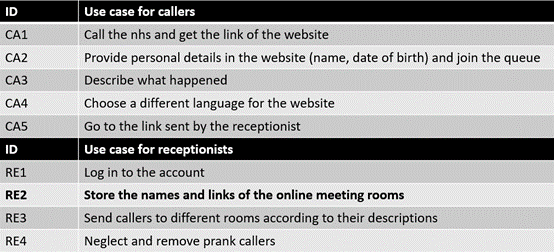
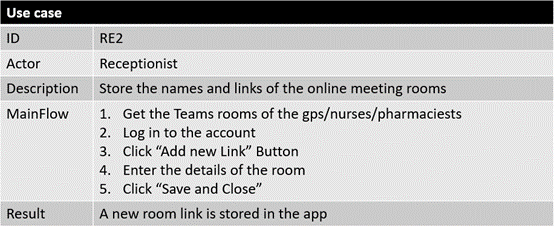
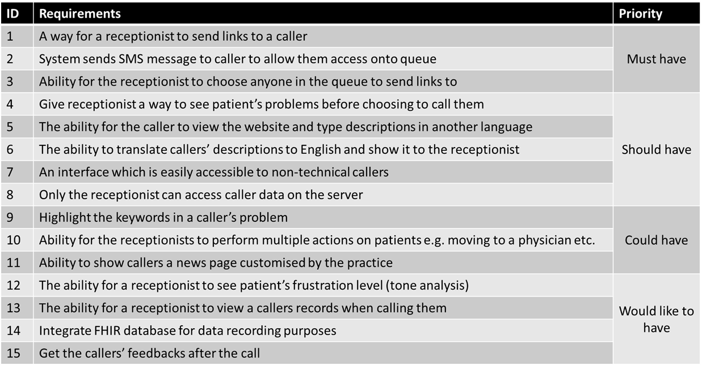
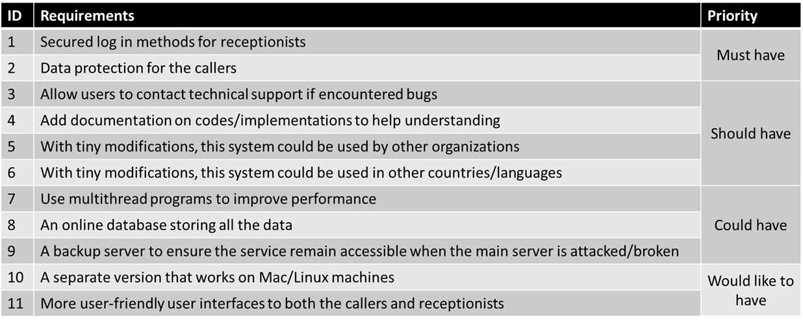

Requirements
Project Background
The current NHS calling system exposed weaknesses under COVID.
Wait time for patients when they call the NHS can be frustrating. Especially at the moment with COVID people will be waiting for a longer time until getting talked to by a receptionist.
The receptionists can only handle a limited amount of people and the data of callers are not collected or analyzed to help improve the NHS performance.
Client Introduction
Dr Atia Rafiq , Dr Stephanie Coughlin from NHS
Prof John McNamara from IBM
Dr Dean Mohamedally from UCL
Dr Elizabeth Krymalowski from RCGP
Project Goals
-Improve the efficiency of the NHS calling system
-Improve caller experience by providing them a reliable estimated waiting time
-Allow receptionists to handle the callers precisely and effectively
-Enables data collection of callers to help NHS improve their services
Requirement Gathering
Surveys with single-choice questions and questionnaires are given out to students of our grade(callers) and our relatives who work as nurses and doctors(receptionists)
Below is the questionnaire for callers:
- What would be your past experience of calling NHS or other companies?
- Are there things that you find annoying when calling?
- What sort of experience would you like to have when you call?
- How willing are you to call a company opposed to any other form of contact e.g., going in person or online? Why?
- What sort of things would you call the GP about? i.e., what illness do you have
- Would you prefer to talk to a receptionist with video, two way or one way, or just audio?
- How important is person-to-person contact when calling instead of speed of being seen?
Below is the questionnaire for receptionists:
- How would you prioritize answering people in a queue if you could do so? E.g., time, frustration, significance of issue?
- How useful would it be to know how many people are waiting?
- Would you prefer to talk to the caller with video, two way or one way, or just audio?
- Are there things that you find annoying when receiving a call?
- Do you think there is a loss of personal contact for callers? If so is it worth it to improve the speed of them being seen?
The requirements are put together in a csv file and analyzed. After analysis, conclusions have been made and personas of callers and receptionists are formed.
Personas


Use cases



Moscow List
Functional Requirements

Non-functional Requirements
